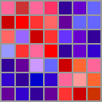

The GenePattern Graphical Environment (GPGE) is an easy-to-use integrated environment for data analysis and visualization.
Add Data Files
The first step in using the GenePattern Graphical Client is to add your data files. GenePattern allows you to do this by specifying the directories that contain your data. These are referred to as project directories. To load your data, select Open Project Directory from the File menu.
Run a Module
Select a module from the Analysis, Visualization, or Pipelines menus. Enter the values for the input parameters and click Run.
For detailed instructions on using GenePattern, please see the GenePattern tutorial at www.genepattern.org/tutorial.
To subscribe to mailing lists or find out about the latest developments, please visit www.genepattern.org.